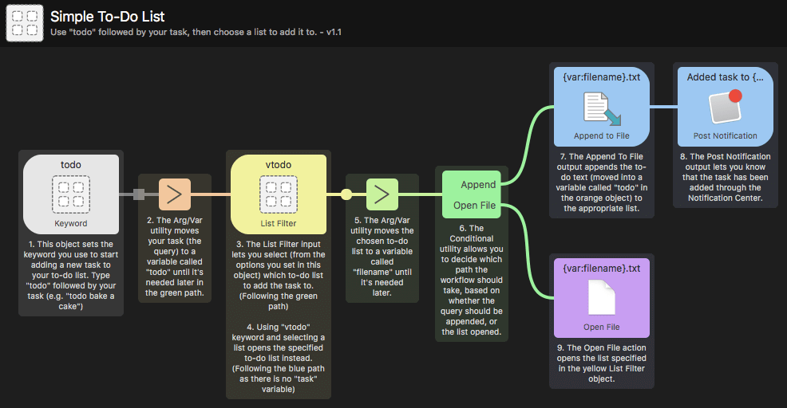

Workflow Utilities
Utilities give you control over how your objects are connected together and over how the arguments output by the previous object is passed on to the next object.
Arguments and Variables
This versatile utility allows you to make two types of changes to the input from the previous object; Use Argument to modify the input before outputting it, and use variables to store the input for use later in your workflow.
Split Arg to Vars
This utility makes it easy to split one argument into multiple variables. By specifying the delimiter, you can quickly turn one string into a set of variables for your workflow to use.
Junction
The junction utility is a very simple workflow object that performs no action itself, but allows you to tidy up your workflow connections.
Conditional
The conditional utility allows you to set conditions to tell your workflow which path to follow, depending on which condition is matched by the argument.
Filter
The Filter utility helps you control which stream your workflow should follow by matching certain rules, using equal to, not equal to and regex matching.
File
The Filter utility helps you check if a file path exists, and optionally sets a variable for the UTI.
Delay
This utility allows you to add a delay (in seconds) before moving on to the next object in your workflow stream.
Transform
This handy utility helps you process the input text and format it to suit your needs, tidying up the data formatting.
Replace
This utility allows you to replace an input with another value of your choice before passing it on to the next object.
Random
The Random utility gives you an easy, script-free way of returning random results from a defined list or type, such as numbers, words from a list or UUIDs (Universal Unique Identifier). You can use it for simple "heads or tails" binary choices, or for more advanced random selections.
Hide Alfred
This utility object gives you more control when preventing Alfred from hiding in a connection.
Show Alfred
A utility that makes it to show Alfred's text field with a pre-filled argument and position the cursor.
JSON Configuration
Use the JSON object to modify the flow of data through Alfred, allowing for updated arguments, variable replacements, dynamic configuration of connected objects and inserting new variables.
Debug
The Debug workflow object can be connected to any other object in your workflow. Together with the debug viewer, it can help you troubleshoot issues with your workflows' outputs.
Find out more about Utilities
Want to see the Utilities in action? We've included a few workflows in the Getting Started guides and examples in Alfred, which you can find under the [+] button at the bottom of the Workflows sidebar in Alfred's preferences.

Many of these workflows use utilities, which you'll recognise as smaller square objects in comparison to the other objects. They're small but mighty!
Find out more about Workflows
Discover workflows and learn how to create your own in the Workflows section.
To find out more about other workflow objects, take a look at each type:
- Triggers: Activate Alfred from a hotkey, another Alfred feature or an external source.
- Inputs: Keyword-based objects used to perform an action, on its own or followed by a query.
- Actions: The objects that do most of the work in your workflows; opening or revealing files and web searches, running scripts and performing commands.
- Outputs: Collect the information from the earlier objects in your workflow to pop up a Notification Centre message, show output in Large Type, copy to clipboard or run a script containing the result of your workflow.